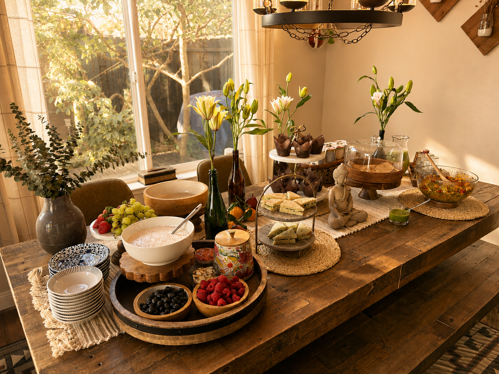
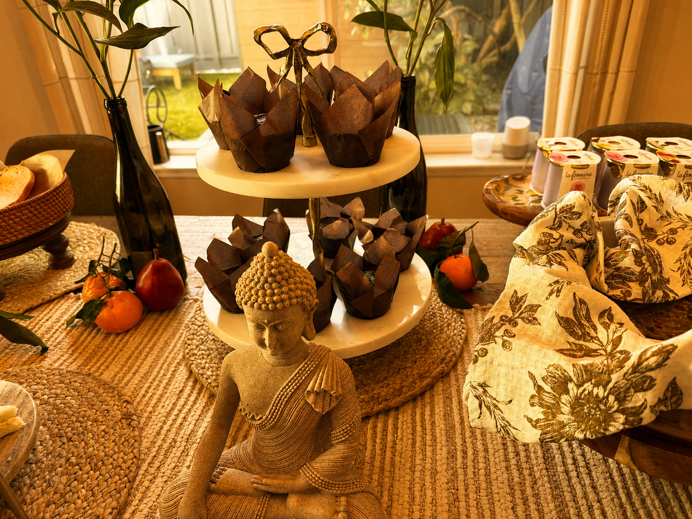
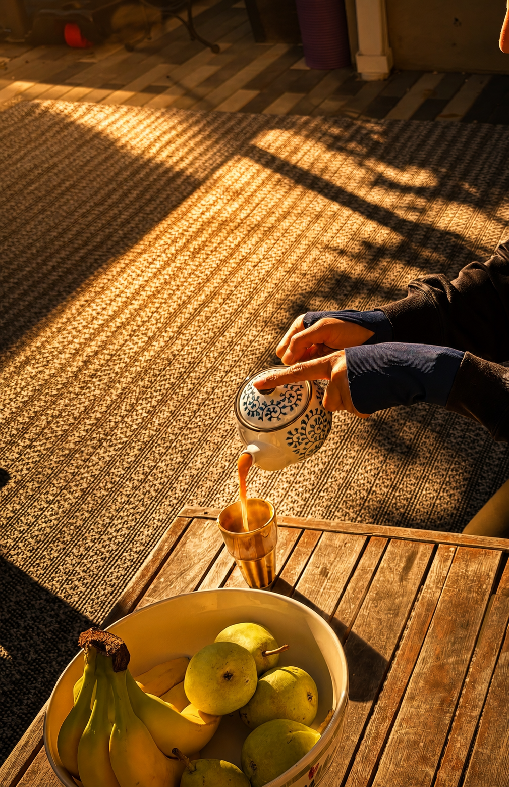

Yoga & Brunch — designing a morning that
feels like a fresh start
Eight people, a winter backyard, and a brief that said: nourishing for the soul and the body. Every decision — the outdoor rugs, the space heaters, the immunity shots before yoga, the pre-event survey about dietary needs and experience levels — was a design constraint answered with intention. Co-designed the yoga flow with a fellow UX designer who teaches yoga, so the session arc was as considered as the table.

The full table before guests arrived — lily stems in dark bottles, Buddha as visual anchor, woven texture running wall to wall.

A $12 Buddha figure anchoring the visual center of a composed table — hierarchy without hierarchy.

The chai moment — brewed fresh after yoga, poured in sunlight. A ritual, not just a drink.
Design observation
I'd design the menu differently next time: fewer options, more presence. Complexity at transition points costs you the moment.